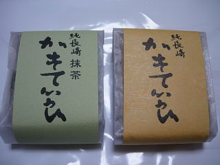
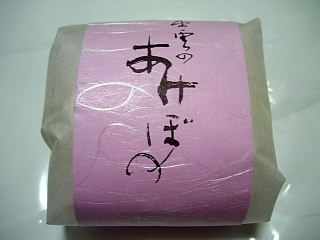

竹香堂のカステラ
2010/2/24
個包装のカステラです。

とってもしっとりたカステラです。なんとなくケーキのような感じがしますね。
やわらかくて、ふわふわのカステラです。
私はドライなタイプよりこっちのほうが食べやすくて好きですね。
島根県出雲市今市町748
2010/2/24
個包装のカステラです。

とってもしっとりたカステラです。なんとなくケーキのような感じがしますね。
やわらかくて、ふわふわのカステラです。
私はドライなタイプよりこっちのほうが食べやすくて好きですね。
2010/2/21
カスタードクリームの入ったケーキでした。

全国各地のお土産もの屋さんで販売しているような商品ですね。「萩の月」みたいな商品です。
これはクリーム多めで、甘くて美味しかったです。
普通のお土産物よりちょっと上等な感じがしました。
2005/10/11
出雲市今市町にある竹香堂のカステラを食べました。
今回食べたのは、小さくカットしたカステラが個包装にしてあるものです。
個包装なので食べるのが楽々でした。
大きいカステラを切ってちょっとずつ食べるのって、ちょっと面倒ですもんね。他のお店もどんどん小さいカステラを出してもらうと、買いやすいし食べやすくて嬉しいんですけど。
カステラは水分が多くしっとりしているんですが、スポンジが密になっていないのでさっくりとしていて、重すぎずいいバランスになってました。